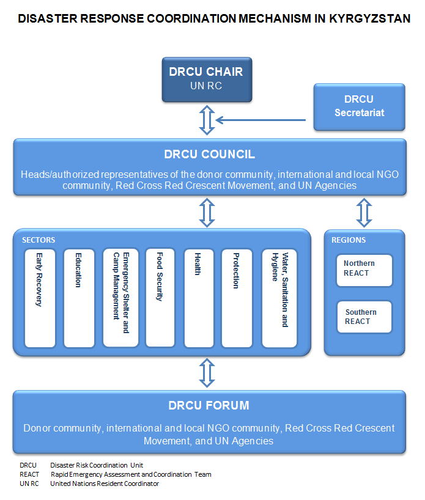
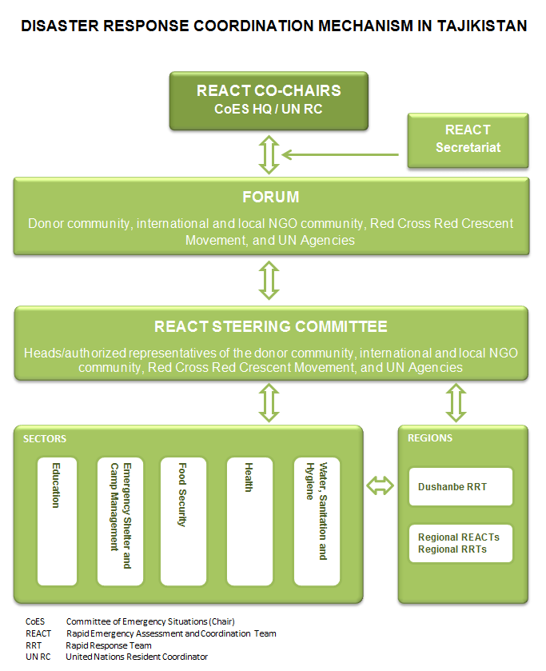

Coordination Structure
OCHA assists people in need by coordinating the work of humanitarian actors to ensure a coherent response to emergencies.
Coordination in Caucasus and Central Asia
In partnership with national and international humanitarian partners, ROCCA builds missing or strengthens existing disaster preparedness and response structures in the region. At country-level, humanitarian aid communities in five out of eight countries established (dormant) Humanitarian Country Teams (HCT) with support from ROCCA. This arrangement allows for better information exchange and participation of all relevant humanitarian partners at the disaster preparedness stage. An HCT gets fully activated only in case of a major emergency.
Furthermore, ROCCA has brought together key regional humanitarian partners to form a Regional Inter-Agency Standing Committee Task Force for Caucasus and Central Asia.
ROCCA also supports the following coordination mechanisms in the Caucasus and Central Asia:
Central Asian Center for Disaster Response and Risk Reduction – CACDRRR
Since 2005 OCHA has contributed extensively to the establishment of CACDRRR, which is currently in its nascent phase. The founding documents are expected to be ratified by the Governments of the two participating countries, Kazakhstan and Kyrgyzstan, by end 2012. The Center, once operational, will work to improve regional cooperation and coordination in the field of disaster response and risk reduction. It will enhance solidarity and promote human security in Central Asia. The European Commission’s Humanitarian Aid and Civil Protection Department, OCHA, UNDP, and the United Nations International Strategy for Disaster Reduction (UNISDR) are expected to maintain their involvement and provide technical assistance and guidance to the Center.
Disaster Response Coordination Unit in Kyrgyzstan – DRCU
Since 2008, DCRU has steered disaster preparedness and response efforts of the UN Agencies, Red Cross Red Crescent Movement and NGOs in support of the Government. Part of DRCU mechanism, the Rapid Emergency Assessment and Coordination Teams (REACTs) in the north and south of the country undertake joint needs assessments in small- to medium-scale emergencies. These inter-agency teams comprise representatives of the UN organizations, Red Crescent Society of Kyrgyzstan, and the wider humanitarian community. (more)
 |
{kind=link}
Rapid Emergency Assessment and Coordination Team in Tajikistan – REACT
REACT coordinates disaster response to small- and medium-scale natural disasters in Tajikistan. The structure is composed of donors, the Government of Tajikistan, local and international NGOs, the United Nations and other organizations involved in early warning, disaster mitigation, preparedness, response and recovery.
The REACT Forum is co-chaired by the Chairman of the Committee of Emergency Situations & Civil Defense and the Head of the United Nations in Tajikistan. The REACT Steering Committee serves as an inter-cluster coordination mechanism and advises the REACT Forum. The REACT mechanism furthermore comprises provincial REACTs and clusters. There are five semi-permanent clusters in ‘peace time’: education, food security (including nutrition), health, shelter/NFI, and WASH. The clusters meet regularly and coordinate preparedness and response activities in their respective sectors. (more)
 |
{kind=link}